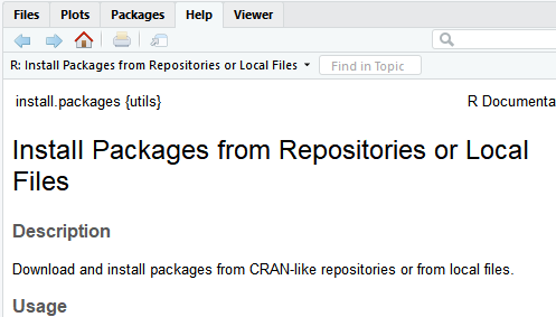
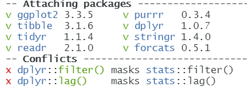

Introduction
This is the course notes for IE6600 Computation and Visualization course, which has covered the following semesters:
Description
IE6600 covers basic of the R, and R Shiny for data preprocessing, and visualization. It introduces students to static and interactive visualization, dashboard, and platform that reveal information, patterns, interactions, and comparisons by paying attention to details such as color encoding, a shape selection, spatial layout, and annotation. Based on these fundamentals of analytical and creative thinking, the course then focuses on data visualization techniques and the use of the most current popular software tools that support data exploration, analytics-based storytelling and knowledge discovery, and decision-making in engineering, healthcare operations, manufacturing, and related applications.
Textbooks
Most of the course materials are borrowed from the following books/resources.
- R For Data Science (R4DS), Wickham, Hadley, and Garrett Grolemund
- R For Everyone (R4E), Lander, Jared P.
- R Markdown (RMD), Xie, Yihui, et al.
- Shiny tutorial, R Shiny
R-related Materials
- R Graphics Cookbook (RGC), Chang, Winston.
- Advanced R (ADR), Wickham, Hadley.
- R Packages (RPK), Wickham, Hadley.
- Text Mining with R (TM), Silge, Julia, and David Robinson.
Lectures
| Topic | Slides | Textbook/Materials |
|---|---|---|
| Basic of R | 📑 | R4E "Basics of R" |
| 📑 | R4E "Advanced Data Structure" | |
| R functions and the grammar of visualization | 📑 | R4DS Workflow |
| Wickham A layered grammar of graphics | ||
| (optional) R4E "Writing R functions" | ||
| Data Visualization Concepts | ||
| Basic data visualization in R | 📑 | R4DS Data Visualization with ggplot2 |
| (optional) RGC"Quickly Exploring Data" | ||
| Data transformation with dplyr | 📑 | R4DS Data Transformation with dplyr |
| Data wrangling with tibbles, readr and tidyr | 📑 | R4DS Tibbles with tibble |
| R4DS Data Import with readr | ||
| R4DS Tidy Data with tidyr | ||
| (optional) Data wrangling with stringr, forcats | 📑 | (optional) R4DS"Strings with stringr", "Factors with forcats" |
| Visualizing Relational Data | 📑 | R4DS Relational Data with dplyr |
| Introduction to Shiny | 📑 | R Shiny Shiny tutorial |
| Exploratory data analysis and more data visualization | 📑 | R4DS Exploratory Data Analysis |
Disclaimer
I am pretty sure there are some typing errors, spelling mistakes, etc. If you find any, please contact me via lu [dot] zhenyua [at] northeastern [dot] edu.
This work is licensed under a Creative Commons Attribution-ShareAlike 4.0 International License

FAQ in IE6600
The following are the solutions/answers covered most of the questions in the class:
R Markdown Issues
1. Error(s) with installation of tinytex/MikTex
If you have to use MikTex:
You can install the dev version of the R package tinytex:
devtools::install_github('yihui/tinytex')
If you haven't installed MiKTeX, remember to check the option Yes in Install missing packages when installing it:

If you have already installed MiKTeX, go to the Start menu, find the menu "MiKTeX Console", and choose the option Always install missing packages on-the-fly:

If you don’t have to use MiKTeX:
Things will be a little easier. Uninstall MiKTeX if you have installed it (or temporarily rename its installation folder if you don't want to get rid of it completely), then in R:
install.packages('tinytex')
tinytex::install_tinytex()
This will install TinyTeX (a custom version of TeX Live), which can also build LaTeX documents to PDF on Windows (more info, see https://yihui.name/tinytex/). Restart RStudio/R when the installation is done (it may take 3-5 minutes).
Reference: @Yihui, https://github.com/rstudio/rmarkdown/issues/1285#issuecomment-374340175
2. If above doesn't work
If you still have issues with LaTex/tinytex, please download the following tools directly:
- For Mac user: MacTex 2022 - http://tug.org/mactex/
- For Win user: MiKTeX - https://miktex.org/download
3. If you have the pandoc error 137
Error: pandoc document conversion failed with error 137
You may have two alternative ways to deal with it (Recommended the first one):
- Knit your .rmd to .html and then print/save it as .pdf.
- Please check the post: https://stackoverflow.com/questions/51410248/r-markdown-to-html-via-knitr-pandoc-error-137?rq=1
R Language
1. Error in loading packages in Rstudio (See figure)

You have successfully loaded the ggplot2. The issue is on the package of colorspace.
Please do the following:
remove.packages(c("ggplot2", "colorspace"))
install.packages('ggplot2', dependencies = TRUE)
install.packages('colorspace', dependencies = TRUE)
2. When I use the is.character(x) or is.numeric(x) to judge the vector x, it doesn't show all result of elements.
When you assign variables into one vector, then all the elements in the vector will be treated as the same data type. But if you want to check each of the elements' data type, You may want to use the following function: sapply() or lapply()
temp<-c(1,2,"a")
sapply(temp, is.character)
3. What is coercion rule in R?
R follows the coercion rule, which means if a vector contains multiple data types it will convert a logical to a number and number to a character.
4. I can't understand the data type of factor possesses usage in R language. Could you give me some examples?
Try the following in R:
ggplot(mpg)+geom_bar(aes(drv))
ggplot(mpg)+geom_bar(aes(factor(drv, levels=c("r",4, "f"))))
5. Changing size/color by using size=0.1 or color="blue" but this kind of coding will make every point the same,
When syntax size= and color= are inside of aes()which allows you to assign variables to different sizes or colors. When they are outside of aes(), which allows you to assign constant values to size or color, 1, or "blue", etc.  
R with Tableau
- How to connect R to Tableau? please check out the following tutorial on Youtube: https://www.youtube.com/watch?v=iReaNA4D2os&list=PLkqc8xRb_lIDSWEEtX9wJsngZyMPb6np3&index=7
Basic of R


Installation of R
After you click the following link: https://cran.r-project.org/
You will see as the following figure. Click the proper link and start the installation

For Mac User: Make sure you are downloading the correct version, otherwise it will cause errors
Installation of R studio
After you click the following link: https://www.rstudio.com/products/rstudio/download/
You will see as the following figure. Choose the free version, which is totally enough for our class application and practice

Tip: Update R language in Rstudio
For Windows users only:
# install package installr ---- install.pacages("installr") # load package ---- library(installr) # update R ---- updateR()For Mac users:
Go to R project to download the latest R.
Note: make sure to install the correct version of R for your Mac chips.
RStudio Interface
If you have successfully installed the R studio, you will see the same R studio console as the below figure showing after launching on the RStudio. (OS: Windows 10)
In this class, all the practice, homework, and project will be processing on RStudio.

R Packages
A package is essentially a library of prewritten code designed to accomplish some task or a collection of tasks. It is the most powerful tool in the R.
In this class we will be more focused on the package of ggplot2, which is most efficient package for visualization. Though there are still some very robust and well-maintained packages out there, such as dplyr, readr, caret, tibbles, or knitr.
Installation of R Packages
The fastest way to do is typing the following scripts in the Rstudio.
# install package ggplot2 (package name should be a string)
install.packages("ggplot2")
NOTE: the package name is case sensitive, which means Ggplot2 is different from ggplot2
Get Help Document
There are 3 ways to get help document.
-
Press F1 (for laptop may click
Fn+F1, or "Other function key"+F1) and then the help tab will pop up on the right bottom of the RStudio. -
Type
help(install.packages) -
Type
?install.packages
Then you will see:

Un/Loading R Packages
Loading R packages (Two ways)
library(ggplot2)

Or:
require(ggplot2)

require is designed for use inside functions returning FALSE/TRUE.
Unloading R packages:
detach("package:ggplot2")
NOTE 1: We usually ignore the warning message, not all the time.
NOTE 2: You may need to load the packages again if you relaunch RStudio.
NOTE 3: It will automatedly detach all the global packages you loaded after closing Rstudio,
then follow NOTE2...

Packages Needed
You’ll also need to install some R packages. An R package is a collection of functions, data, and documentation that extends the capabilities of base R.
install.packages("tidyverse")
library(tidyverse)

This tells you that tidyverse is loading the ggplot2, tibble, tidyr, readr,
purrr, stringr, forcats, and dplyr packages. These are considered to be the core of the tidyverse
because you’ll use them in almost every analysis.
This also tells you that there are two functions from dplyr having conflicts with stats.
You'll use dplyr:: or stats:: to specific the function from dplyr.
This is a very common issue students may have.
Installation of R Markdown
There are many other excellent packages that are not part of the tidyverse.
# install r markdown from CRAN ----
install.packages("rmarkdown")
# or if you want to test the development version ----
# install from GitHub ----
if (!requireNamespace("devtools"))
install.packages('devtools')
devtools::install_github('rstudio/rmarkdown')
If you want to generate PDF output, you will need to install LaTeX. For R Markdown users who have not installed LaTeX before, we recommend that you install tinyteX.
# install tinyteX ----
install.packages("tinytex")
tinytex::install_tinytex()
If you have any issues with R Markdown, feel free to check: FAQ for the class
References:
[1] Hadley Wickham, Garrett Grolemund. R For Data Science. 2017.
[2] Yihui Xie, J. J. Allaire, Garrett Grolemund. R Markdown. 2022.